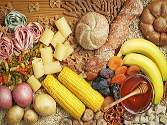

5 цікавих фактів
- Люди, які живуть на узбережжі, живуть довше, ніж мешканці материка.
- Кавові зерна, а точніше хлорогенова кислота, що міститься в них, оберігає наш мозок від руйнування.
- Менше 10% всіх людей на планеті вміють правильно дихати. Необхідно при диханні задіяти не тільки грудну клітку, а й живіт.
- Вживання ківі, а також використання його в якості маски для обличчя омолоджує шкіру....
- Якщо щодня з’їдати ядра п’яти волоських горіхів, тривалість життя збільшиться на 7 років.
5 правил для покращення здоров’я
- Робіть, як мінімум, 10 000 кроків кожного дня
- Вчіть своє тіло бути послідовним в виконанні вправ
- Снідайте
- Будьте активні протягом дня
- Пийте воду протягом всього дня
Таблиця корисних продуктів і вітамінів
Значення для організму |
Джерела надходження |
||
|---|---|---|---|
| Вуглеводи | 1.Вуглеводи дають почуття ситості 2.Сприяють нормалізації процесів 3.Деякі допомагають втамовувати голод |
 | |
| Білки | 1.Білки основний будівельний матеріал 2.Білки крові транспортують поивні речовини 3.Деякі білки регулють обмін речовин |
||
| Жири | 1.Жири-найбагатше джерело енергії для організму 3.Важливі для засвоєння деяки вітамінів 4.Утворюють в організмі запаси |

|
|